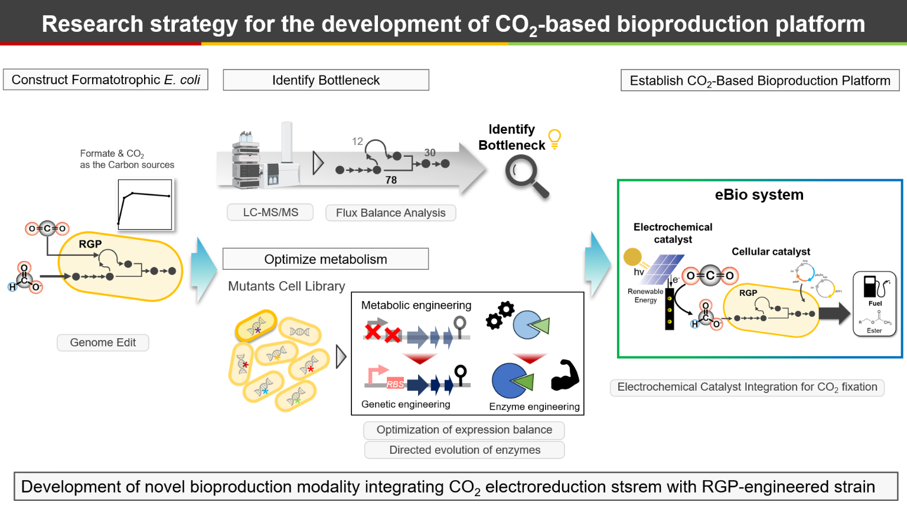

ゲノム編集・代謝工学・酵素工学
Genome editing, metabolic and enzyme engineering
Strain engineering
CO₂資化技術に
パラダイムシフトを起こす
A paradigm shift
in CO₂ assimilation
A PARADIGM SHIFT IN CO₂ ASSIMILATION
CO₂資化技術にパラダイムシフトを起こす
Taisei Naobayashi
直林大生
なおばやし たいせい
東京農工大学 大学院 工学府 生命工学専攻 修士1年
京都大学 大学院薬学研究科 薬品機能解析学分野 津川裕司研究室 所属
Systems Omics Lab
M1, Department of Biotechnology and Life Science,
Graduate School of Engineering,
Tokyo University of Agriculture and Technology
Laboratory of Pharmaceutical Function Analysis (Tsugawa Lab),
Graduate School of Pharmaceutical Sciences,
Kyoto University
Systems Omics Lab
排気CO2からダイレクト変換を可能にする
バイオ生産プラットフォームの構築
カーボンニュートラルの実現には、CO2を「排出するもの」から「使える資源」へ変える技術が必要です。再生可能エネルギーを使う電気化学的CO2還元は有望ですが、つくれる分子はギ酸などごく単純なものに限られます。一方で微生物は多様な化学品を選択的につくれるのに、その原料は糖などの有機資源に依存したままです。
そこで私は、この二つをつなぎます。ギ酸を食べて育つ大腸菌を還元的グリシン経路（RGP）の導入によって設計し、電気培養と組み合わせることで、CO2のみで生育する大腸菌の開発に成功しました。
RGPは天然の炭素固定経路よりもエネルギー効率に優れ、世界中で開発が進む経路です。研究の焦点はすでに「経路をつくる」段階から、「性能を高めて実用的な物質生産につなげる」段階へ移りつつあります。私はLC-MS/MSによるメタボロミクスと代謝フラックス解析でボトルネックを突き止め、代謝・遺伝子・酵素の改変によって性能を引き上げることで、CO2から燃料や化学品をつくるプラットフォームの実現を目指しています。
Building a bioproduction platform
for direct conversion of exhaust CO2
Carbon neutrality asks us to treat CO2 not as waste but as a resource. Electrochemical CO2 reduction, powered by renewable electricity, is a promising way to do that — yet the molecules it yields are simple ones such as formate. Microbes, meanwhile, can build a wide variety of chemicals with great selectivity, but they still run on sugars and other organic feedstocks.
My work joins the two. By installing the reductive glycine pathway (RGP), I designed E. coli that feeds on formate, and combined it with electro-cultivation to obtain E. coli that grows on CO2 alone.
The RGP is more energy-efficient than natural carbon fixation pathways, and laboratories worldwide are now developing it. The field has already moved on from building such a pathway to raising its performance far enough for real production. I use LC-MS/MS metabolomics and metabolic flux analysis to find the bottlenecks, then lift performance through metabolic, genetic and enzyme engineering — towards a platform that makes fuels and chemicals out of CO2.

Google Scholarで全業績を見る（→）All publications on Google Scholar (→)
Strain engineering
Metabolic analysis
Analytical chemistry
Data processing